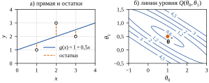
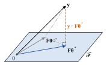
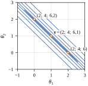
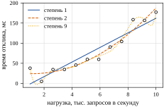

3 Линейная регрессия и метод наименьших квадратов
В гл. 1 обучение было сведено к минимизации эмпирического риска. В этой главе задача решается до конца для самого простого случая: модель линейная, потеря квадратичная. Тогда оптимальные параметры находятся точно — как решение системы линейных уравнений. Из этого решения видно и слабое место метода: при почти совпадающих признаках веса модели становятся неустойчивыми.
3.1 Задача регрессии
Пусть функция задана таблично: известны её значения y_i в точках x_i, i = 1, \ldots, \ell, а аналитическое выражение неизвестно. Восстановить функцию по таблице можно с разными целями. Интерполяция — найти значения функции между узлами таблицы; искомая функция проходит через все табличные точки точно. Экстраполяция — найти значения за пределами отрезка, на котором задана таблица. Аппроксимация — подобрать функцию заданного вида, которая проходит близко к табличным точкам, но не обязательно через них. Во всех трёх случаях по конечной таблице восстанавливается аналитическое выражение функции.
Обучающая выборка в задаче регрессии — такая же таблица: объектам x_i сопоставлены ответы y_i. Регрессия — это аппроксимация, потому что ответы содержат шум: цена квартиры зависит не только от её признаков, но и от торга, срочности продажи, ошибок в объявлении. Обычно считают, что
y = \varphi(x) + \varepsilon,
где \varphi(x) — закономерная часть ответа, а \varepsilon — случайная ошибка со средним 0. Функция, которая проходит через все точки выборки, повторяет вместе с закономерностью и шум, и на новых объектах её прогнозы будут ошибаться на величину этого шума. Поэтому от модели требуют не точного совпадения с ответами, а малой средней ошибки. Экстраполяция для регрессии опасна: за пределами диапазона обучающих данных модель ничем не проверена.
Термин «регрессия» ввёл Ф. Гальтон в конце XIX в., изучая связь роста детей и родителей. Метод наименьших квадратов опубликовал А. Лежандр в 1805 г.; К. Гаусс применял его раньше и дал ему вероятностное обоснование.
3.2 Один признак
Начнём со случая, когда у объекта один числовой признак. Для краткости будем обозначать его значение на i-м объекте через x_i (как в табл. 1.3). Модель — прямая
g(x, \boldsymbol{\theta}) = \theta_0 + \theta_1 x,
где \theta_1 — наклон, \theta_0 — значение модели при x = 0, то есть ордината точки, в которой прямая пересекает ось ординат. Разность g(x_i, \boldsymbol{\theta}) - y_i называют остатком на i-м объекте. Эмпирический риск с квадратичной потерей — это средний квадрат остатков:
Q(\theta_0, \theta_1) = \frac{1}{\ell} \sum_{i=1}^{\ell} (\theta_0 + \theta_1 x_i - y_i)^2.
Найти параметры, при которых Q минимален, — это и есть метод наименьших квадратов (МНК).
Квадрат, в отличие от модуля, — гладкая функция: у Q есть производные по обоим параметрам, и точку минимума можно найти, приравняв их к нулю. График Q — «чаша» с единственным минимумом (рис. 3.1, б); линии уровня Q — вложенные эллипсы с общим центром в точке минимума. Недостаток квадратичной потери — чувствительность к выбросам: большой остаток после возведения в квадрат вносит в Q непропорционально большой вклад, и прямая смещается к выбросу.

Вывод формул. В точке минимума обе частные производные Q равны нулю. Производная по \theta_0:
\frac{\partial Q}{\partial \theta_0} = \frac{2}{\ell} \sum_{i=1}^{\ell} (\theta_0 + \theta_1 x_i - y_i) = 0.
Разделим на 2 и раскроем сумму: \theta_0 + \theta_1 \bar x - \bar y = 0, где \bar x и \bar y — средние значения признака и ответа. Отсюда
\theta_0 = \bar y - \theta_1 \bar x.\tag{3.1}
Производная по \theta_1 отличается множителем x_i под знаком суммы:
\frac{\partial Q}{\partial \theta_1} = \frac{2}{\ell} \sum_{i=1}^{\ell} (\theta_0 + \theta_1 x_i - y_i)\, x_i = 0.
Подставим сюда \theta_0 из (3.1): под суммой окажется \bigl(\theta_1 (x_i - \bar x) - (y_i - \bar y)\bigr) x_i. Множитель x_i можно заменить на x_i - \bar x: добавка \bar x \sum (\ldots) равна нулю, потому что сумма отклонений от среднего равна нулю. Получаем
\theta_1 = \frac{\sum\limits_{i=1}^{\ell} (x_i - \bar x)(y_i - \bar y)}{\sum\limits_{i=1}^{\ell} (x_i - \bar x)^2}.\tag{3.2}
Читаем формулы. Равенство (3.1) означает, что прямая МНК проходит через точку средних (\bar x, \bar y), а сумма остатков равна нулю: модель в среднем не завышает и не занижает ответы. Числитель (3.2) — тот же, что у коэффициента корреляции из гл. 2: он положителен, если x и y чаще одновременно выше или одновременно ниже своих средних. Знаменатель — разброс признака. Если признак почти не меняется, знаменатель мал и наклон определяется ненадёжно; если все x_i одинаковы, наклон не определён вовсе. Можно проверить, что \theta_1 = r s_y / s_x, где r — коэффициент корреляции, а s_x и s_y — стандартные отклонения признака и ответа.
Пример. Выборка из трёх точек: (1; 1), (2; 3), (3; 2). Средние \bar x = 2, \bar y = 2. Числитель (3.2): (-1)(-1) + 0 \cdot 1 + 1 \cdot 0 = 1, знаменатель: 1 + 0 + 1 = 2, значит \theta_1 = 0{,}5 и \theta_0 = 2 - 0{,}5 \cdot 2 = 1. Модель g(x) = 1 + 0{,}5x даёт прогнозы 1{,}5; 2; 2{,}5 и остатки 0{,}5; -1; 0{,}5 (рис. 3.1, а). Их сумма равна нулю, а Q = (0{,}25 + 1 + 0{,}25)/3 = 0{,}5. Никакая другая прямая не даёт меньшего среднего квадрата остатков.
3.3 Много признаков
Пусть теперь признаков n. Линейная модель (1.1) из гл. 1 с фиктивным признаком f_0(x) = 1 записывается скалярным произведением g(x, \boldsymbol{\theta}) = \langle \boldsymbol{\theta}, \mathbf{x} \rangle. Добавим в матрицу объекты–признаки столбец из единиц:
\mathbf{F} = \begin{pmatrix} 1 & f_1(x_1) & \ldots & f_n(x_1) \\ \vdots & \vdots & \ddots & \vdots \\ 1 & f_1(x_\ell) & \ldots & f_n(x_\ell) \end{pmatrix}, \quad \boldsymbol{\theta} = \begin{pmatrix} \theta_0 \\ \theta_1 \\ \vdots \\ \theta_n \end{pmatrix}.
Тогда произведение \mathbf{F}\boldsymbol{\theta} — вектор прогнозов для всех объектов сразу: его i-я компонента равна \sum_j \theta_j f_j(x_i) = g(x_i, \boldsymbol{\theta}). Вектор остатков — \mathbf{F}\boldsymbol{\theta} - \mathbf{y}, а эмпирический риск — квадрат его длины, делённый на \ell:
Q(\boldsymbol{\theta}) = \frac{1}{\ell} \sum_{i=1}^{\ell} \bigl(\langle \boldsymbol{\theta}, \mathbf{x}_i \rangle - y_i\bigr)^2 = \frac{1}{\ell} \|\mathbf{F}\boldsymbol{\theta} - \mathbf{y}\|_2^2.
Градиент. Частная производная по \theta_k вычисляется так же, как в одномерном случае:
\frac{\partial Q}{\partial \theta_k} = \frac{2}{\ell} \sum_{i=1}^{\ell} \bigl(\langle \boldsymbol{\theta}, \mathbf{x}_i \rangle - y_i\bigr) f_k(x_i), \quad k = 0, \ldots, n.
Сумма по объектам произведений остатка на значение k-го признака — это скалярное произведение k-го столбца матрицы \mathbf{F} на вектор остатков, то есть k-я компонента вектора \mathbf{F}^{\mathrm{T}}(\mathbf{F}\boldsymbol{\theta} - \mathbf{y}). Все n + 1 производных вместе образуют градиент
\nabla Q(\boldsymbol{\theta}) = \frac{2}{\ell} \mathbf{F}^{\mathrm{T}} (\mathbf{F}\boldsymbol{\theta} - \mathbf{y}).\tag{3.3}
Приравняв градиент к нулю, получаем нормальную систему уравнений
\mathbf{F}^{\mathrm{T}} \mathbf{F} \boldsymbol{\theta} = \mathbf{F}^{\mathrm{T}} \mathbf{y}.\tag{3.4}
Если матрица \mathbf{F}^{\mathrm{T}} \mathbf{F} обратима, решение единственно:
\boldsymbol{\theta}^* = (\mathbf{F}^{\mathrm{T}} \mathbf{F})^{-1} \mathbf{F}^{\mathrm{T}} \mathbf{y}.\tag{3.5}
Проверка размерностей. Ошибки в матричных формулах удобно ловить по размерам сомножителей. Матрица \mathbf{F} имеет размер \ell \times (n + 1), вектор \boldsymbol{\theta} — (n + 1) \times 1, вектор \mathbf{y} — \ell \times 1. Тогда \mathbf{F}\boldsymbol{\theta} — \ell \times 1, как и \mathbf{y}, их можно вычитать. Матрица \mathbf{F}^{\mathrm{T}} \mathbf{F} квадратная, (n + 1) \times (n + 1), — по строке и столбцу на каждый параметр; вектор \mathbf{F}^{\mathrm{T}} \mathbf{y} — (n + 1) \times 1. Значит, в (3.4) столько же уравнений, сколько неизвестных, и размер системы зависит от числа признаков, а не от числа объектов.
Когда решение единственно. Матрица \mathbf{F}^{\mathrm{T}} \mathbf{F} обратима, если столбцы \mathbf{F} линейно независимы: ни один признак не выражается линейно через остальные. Для этого объектов должно быть не меньше, чем параметров: \ell \ge n + 1. Типичное нарушение описано в гл. 2: если при прямом кодировании оставить индикаторы всех районов, их сумма совпадёт со столбцом f_0. Тогда решений бесконечно много: увеличим \theta_0 на любое число и уменьшим на то же число веса всех районов — прогнозы не изменятся.
Пример. Проверим результат разд. 3.2 по формуле (3.5). Для трёх точек
\mathbf{F} = \begin{pmatrix} 1 & 1 \\ 1 & 2 \\ 1 & 3 \end{pmatrix}, \quad \mathbf{F}^{\mathrm{T}} \mathbf{F} = \begin{pmatrix} 3 & 6 \\ 6 & 14 \end{pmatrix}, \quad \mathbf{F}^{\mathrm{T}} \mathbf{y} = \begin{pmatrix} 6 \\ 13 \end{pmatrix}.
Определитель \mathbf{F}^{\mathrm{T}} \mathbf{F} равен 3 \cdot 14 - 6 \cdot 6 = 6, обратная матрица и решение:
(\mathbf{F}^{\mathrm{T}} \mathbf{F})^{-1} = \frac{1}{6} \begin{pmatrix} 14 & -6 \\ -6 & 3 \end{pmatrix}, \quad \boldsymbol{\theta}^* = \frac{1}{6} \begin{pmatrix} 14 \cdot 6 - 6 \cdot 13 \\ -6 \cdot 6 + 3 \cdot 13 \end{pmatrix} = \begin{pmatrix} 1 \\ 0{,}5 \end{pmatrix}.
Получились те же \theta_0 = 1, \theta_1 = 0{,}5: формулы разд. 3.2 — частный случай (3.5).
На практике обратную матрицу не вычисляют: это
дольше, а при почти линейно зависимых признаках ещё и теряет точность.
Систему решают численно устойчивыми методами — через QR- или сингулярное
разложение \mathbf{F}. В NumPy это
функция np.linalg.lstsq(F, y), в scikit-learn — класс
LinearRegression (листинг 3.1); столбец из единиц он
добавляет сам, свободный член хранится в атрибуте
intercept_, остальные веса — в coef_.
Листинг 3.1. Линейная регрессия в NumPy и scikit-learn
import numpy as np
from sklearn.linear_model import LinearRegression
x = np.array([[1.0], [2.0], [3.0]]) # один признак
y = np.array([1.0, 3.0, 2.0])
F = np.hstack([np.ones((3, 1)), x]) # столбец f0 = 1
theta = np.linalg.lstsq(F, y, rcond=None)[0]
print(theta) # [1. 0.5]
model = LinearRegression().fit(x, y) # f0 добавляется сам
print(model.intercept_, model.coef_) # 1.0 [0.5]Вычисление \mathbf{F}^{\mathrm{T}} \mathbf{F} требует порядка \ell n^2 операций, решение системы — порядка n^3. При сотнях тысяч признаков или выборке, которая не помещается в память, точное решение становится слишком дорогим; тогда минимум ищут приближённо, итерационными методами, — им посвящена следующая глава.
3.4 Геометрический смысл
Решение МНК можно увидеть геометрически [6, 7]. Векторы ответов и прогнозов — точки \ell-мерного пространства, по одной координате на объект. При всевозможных \boldsymbol{\theta} векторы прогнозов \mathbf{F}\boldsymbol{\theta} — это линейные комбинации столбцов \mathbf{F}; вместе они образуют подпространство
\mathcal{F} = \{\mathbf{F}\boldsymbol{\theta} \mid \boldsymbol{\theta} \in \mathbb{R}^{n+1}\}
размерности n + 1 — на рис. 3.2 это плоскость. Каждая точка плоскости \mathcal{F} — вектор прогнозов при каком-то конкретном \boldsymbol{\theta}. Вектор ответов \mathbf{y} из-за шума обычно плоскости \mathcal{F} не принадлежит. МНК ищет точку плоскости, ближайшую к \mathbf{y}, ведь Q — квадрат расстояния между точками \mathbf{y} и \mathbf{F}\boldsymbol{\theta} (с точностью до множителя 1/\ell).

Ближайшая точка — ортогональная проекция: вектор остатков \mathbf{y} - \mathbf{F}\boldsymbol{\theta}^* перпендикулярен плоскости \mathcal{F}, то есть каждому столбцу \mathbf{F}. Это и есть нормальная система (3.4), записанная в виде \mathbf{F}^{\mathrm{T}}(\mathbf{y} - \mathbf{F}\boldsymbol{\theta}^*) = \mathbf{0}; отсюда и её название («нормаль» — перпендикуляр). Убедимся, что проекция действительно ближе к \mathbf{y}, чем любая другая точка плоскости. Возьмём произвольный вектор параметров \tilde{\boldsymbol{\theta}} \ne \boldsymbol{\theta}^* и соответствующую ему точку \mathbf{F}\tilde{\boldsymbol{\theta}} плоскости \mathcal{F} (рис. 3.2). Точки \mathbf{y}, \mathbf{F}\boldsymbol{\theta}^* и \mathbf{F}\tilde{\boldsymbol{\theta}} образуют прямоугольный треугольник с прямым углом при вершине \mathbf{F}\boldsymbol{\theta}^*: катет \mathbf{y} - \mathbf{F}\boldsymbol{\theta}^* перпендикулярен плоскости, а катет \mathbf{F}\boldsymbol{\theta}^* - \mathbf{F}\tilde{\boldsymbol{\theta}} лежит в ней. По теореме Пифагора
\|\mathbf{y} - \mathbf{F}\tilde{\boldsymbol{\theta}}\|_2^2 = \|\mathbf{y} - \mathbf{F}\boldsymbol{\theta}^*\|_2^2 + \|\mathbf{F}\boldsymbol{\theta}^* - \mathbf{F}\tilde{\boldsymbol{\theta}}\|_2^2 > \|\mathbf{y} - \mathbf{F}\boldsymbol{\theta}^*\|_2^2,
то есть гипотенуза длиннее катета: при любых других параметрах сумма квадратов остатков больше.
В примере из разд. 3.2 вектор остатков (-0{,}5;\, 1;\, -0{,}5) перпендикулярен обоим столбцам \mathbf{F}: -0{,}5 + 1 - 0{,}5 = 0 и -0{,}5 \cdot 1 + 1 \cdot 2 - 0{,}5 \cdot 3 = 0. Ортогональность столбцу из единиц и означает, что сумма остатков равна нулю, — это верно для любой линейной регрессии со свободным членом.
Вектор прогнозов равен \mathbf{F}\boldsymbol{\theta}^* = \mathbf{P}\mathbf{y}, где \mathbf{P} = \mathbf{F}(\mathbf{F}^{\mathrm{T}} \mathbf{F})^{-1} \mathbf{F}^{\mathrm{T}} — проекционная матрица размера \ell \times \ell. Прогнозы на обучающих объектах — линейная функция ответов: каждый прогноз — взвешенная сумма всех y_i.
3.5 Мультиколлинеарность
Мультиколлинеарностью называют ситуацию, когда признаки почти линейно зависимы: например, площадь квартиры по документам и по результатам обмера, длина модуля программы в строках и в символах. Формально матрица \mathbf{F}^{\mathrm{T}} \mathbf{F} обратима, но решение МНК становится неустойчивым.
Пример. Покажем, к чему приводит почти линейная зависимость признаков. Пусть у трёх объектов два признака почти совпадают (свободного члена нет):
\mathbf{F} = \begin{pmatrix} 1 & 1 \\ 2 & 2 \\ 3 & 3{,}1 \end{pmatrix}, \quad \mathbf{F}^{\mathrm{T}} \mathbf{F} = \begin{pmatrix} 14 & 14{,}3 \\ 14{,}3 & 14{,}61 \end{pmatrix}.
Определитель матрицы \mathbf{F}^{\mathrm{T}} \mathbf{F}, равный 14 \cdot 14{,}61 - 14{,}3^2 = 0{,}05, мал по сравнению с её элементами, поэтому элементы обратной матрицы велики, около 290, и любая погрешность в правой части \mathbf{F}^{\mathrm{T}} \mathbf{y} умножается на эти большие числа.
Пусть ответы \mathbf{y} = (2;\, 4;\, 6{,}1), причём последний ответ измерен с погрешностью \pm 0{,}1, то есть менее 2 %: с тем же успехом он мог оказаться равным 6 или 6,2. Решим нормальную систему для всех трёх вариантов (табл. 3.1).
| y_3 | \theta_1^* | \theta_2^* | Прогнозы на обучающих объектах | Прогноз для объекта (2;\, 3) |
|---|---|---|---|---|
| 6,0 | 2 | 0 | 2; 4; 6 | 4 |
| 6,1 | 1 | 1 | 2; 4; 6,1 | 5 |
| 6,2 | 0 | 2 | 2; 4; 6,2 | 6 |
Таблица показывает три следствия мультиколлинеарности.
- Веса неустойчивы. Когда y_3 меняется всего на 0,1 (с 6,1 до 6,0 или до 6,2), решение меняется полностью: по первой модели важен только первый признак, по третьей — только второй, по второй — оба поровну. Делать по таким весам выводы о том, какой признак сильнее влияет на ответ, нельзя.
- На обучающей выборке неустойчивость не видна: все три модели почти одинаково точно воспроизводят ответы, и по ошибке на обучающих объектах их не различить.
- На новых объектах прогнозы расходятся. Если у нового объекта признаки различаются сильнее, чем в выборке, например (2;\, 3), три модели предсказывают 4, 5 и 6 — разброс в 50 %, хотя данные различались на 2 %.
Геометрически это видно на рис. 3.3, где показаны линии уровня Q(\theta_1, \theta_2). Вместо «чаши» получился длинный узкий «овраг» вдоль прямой \theta_1 + \theta_2 \approx 2. На его дне все точки дают почти одинаковую ошибку, поэтому малое изменение данных сдвигает минимум далеко вдоль оврага.

Сингулярное разложение. Чтобы понять, откуда неустойчивость, воспользуемся сингулярным разложением (singular value decomposition, SVD). Любую матрицу \mathbf{F} размера \ell \times (n + 1) при \ell \ge n + 1 можно представить в виде
\mathbf{F} = \mathbf{V} \mathbf{D} \mathbf{U}^{\mathrm{T}},
где \mathbf{V} — матрица \ell \times (n + 1) с ортонормированными столбцами \mathbf{v}_j (\mathbf{V}^{\mathrm{T}} \mathbf{V} = \mathbf{I}), \mathbf{U} — ортогональная матрица (n + 1) \times (n + 1) со столбцами \mathbf{u}_j (\mathbf{U}^{\mathrm{T}} \mathbf{U} = \mathbf{I}), \mathbf{D} = \operatorname{diag}(s_1, \ldots, s_{n+1}) — диагональная матрица сингулярных чисел s_1 \ge \ldots \ge s_{n+1} \ge 0. Подставим разложение в (3.5); так как \mathbf{F}^{\mathrm{T}} \mathbf{F} = \mathbf{U} \mathbf{D}^2 \mathbf{U}^{\mathrm{T}}, после сокращений остаётся
\boldsymbol{\theta}^* = \mathbf{U} \mathbf{D}^{-1} \mathbf{V}^{\mathrm{T}} \mathbf{y} = \sum_{j=1}^{n+1} \frac{1}{s_j} \, \mathbf{u}_j \, (\mathbf{v}_j^{\mathrm{T}} \mathbf{y}), \qquad \mathbf{F}\boldsymbol{\theta}^* = \sum_{j=1}^{n+1} \mathbf{v}_j \, (\mathbf{v}_j^{\mathrm{T}} \mathbf{y}).
Читаем формулу. Число \mathbf{v}_j^{\mathrm{T}} \mathbf{y} — проекция вектора ответов на направление \mathbf{v}_j. В решение \boldsymbol{\theta}^* каждая проекция входит, делённая на s_j. Если какое-то сингулярное число мало, соответствующее слагаемое огромно, и любая погрешность в \mathbf{y} вдоль \mathbf{v}_j умножается на 1/s_j. В прогнозы \mathbf{F}\boldsymbol{\theta}^* сингулярные числа не входят вовсе. Поэтому в примере выше прогнозы на обучающих объектах устойчивы, а веса — нет. Малое s_j означает, что столбцы \mathbf{F} почти линейно зависимы: комбинация признаков с коэффициентами из \mathbf{u}_j почти равна нулю на всех объектах. В примере s_1 \approx 5{,}35, s_2 \approx 0{,}042, а \mathbf{u}_2 \approx (0{,}71;\, -0{,}70) — разность двух признаков.
Насколько система чувствительна к погрешностям, показывает число обусловленности матрицы \mathbf{S} = \mathbf{F}^{\mathrm{T}} \mathbf{F} — отношение наибольшего и наименьшего собственных значений, которые равны квадратам сингулярных чисел:
\kappa(\mathbf{S}) = \frac{s_1^2}{s_{n+1}^2}.
Относительная погрешность решения системы \mathbf{S}\boldsymbol{\theta} =
\mathbf{F}^{\mathrm{T}} \mathbf{y} может быть до \kappa(\mathbf{S}) раз больше относительной
погрешности правой части. В примере \kappa
\approx 16\,400; при \kappa \approx
1 погрешности не усиливаются, при \kappa порядка 10^{12} и выше вычисления в типе
float64 (около 16 верных десятичных знаков) теряют большую
часть точности.
Псевдообратная матрица \mathbf{F}^{+} = \mathbf{U} \mathbf{D}^{-1}
\mathbf{V}^{\mathrm{T}} даёт решение \boldsymbol{\theta}^* = \mathbf{F}^{+}
\mathbf{y} и тогда, когда признаки строго линейно зависимы и
\mathbf{F}^{\mathrm{T}} \mathbf{F}
необратима: в \mathbf{D}^{-1} величину
1/s_j для нулевых (и очень малых) s_j заменяют нулём. Из бесконечного множества
решений получается решение с наименьшей длиной \|\boldsymbol{\theta}\|_2. Так работают
np.linalg.pinv и np.linalg.lstsq. В NumPy
буквы другие: np.linalg.svd(F) возвращает матрицу \mathbf{V} под именем U, вектор
сингулярных чисел и матрицу \mathbf{U}^{\mathrm{T}}.
Что делать с мультиколлинеарностью:
- отбор признаков — удалить один из почти дублирующих признаков, исходя из смысла задачи или корреляций между признаками;
- преобразование признаков — перейти к меньшему числу новых признаков, например к сумме и разности почти совпадающих (на этом основан метод главных компонент; здесь он не рассматривается);
- регуляризация — добавить к Q штраф за большие веса, который превращает овраг в чашу с единственным минимумом (гл. 6).
3.6 Полиномиальная регрессия
Слово «линейная» в названии модели относится к параметрам, а не к исходным данным. Если зависимость нелинейна, в качестве признаков берут степени: f_j(x) = x^j, j = 0, \ldots, d. Модель
g(x, \boldsymbol{\theta}) = \sum_{j=0}^{d} \theta_j x^j = \theta_0 + \theta_1 x + \ldots + \theta_d x^d
— многочлен степени d по x, но линейная функция параметров. Поэтому всё сказанное выше применимо без изменений: строится матрица \mathbf{F} со столбцами 1, x, x^2, \ldots, x^d и решается нормальная система.
На рис. 3.4 время отклика сервиса растёт с нагрузкой нелинейно. Прямая (d = 1) систематически ошибается: занижает время на краях и завышает в середине. Многочлен второй степени описывает зависимость хорошо. Многочлен девятой степени проходит ближе ко всем точкам, но между ними колеблется, повторяя шум. Степень d — гиперпараметр: с её ростом ошибка на обучающей выборке только уменьшается (при d = \ell - 1 многочлен проходит через все точки, регрессия превращается в интерполяцию), а ошибка на новых данных, начиная с некоторой степени, растёт. Как выбрать d по данным, не участвовавшим в обучении, рассказано в гл. 5.

У полиномиальных признаков есть и вычислительная особенность. Если x принимает значения от 1 до 10, столбцы x^4 и x^5 почти пропорциональны, и матрица \mathbf{F}^{\mathrm{T}} \mathbf{F} плохо обусловлена. Для многочлена пятой степени по 12 точкам на этом отрезке \kappa(\mathbf{F}^{\mathrm{T}} \mathbf{F}) \approx 2 \cdot 10^{12}. Если сначала стандартизовать x (гл. 2), число обусловленности падает до 1{,}6 \cdot 10^{3}. Поэтому в scikit-learn полиномиальные признаки строят после стандартизации (листинг 3.2).
Листинг 3.2. Полиномиальная регрессия со стандартизацией признака
from sklearn.linear_model import LinearRegression
from sklearn.pipeline import make_pipeline
from sklearn.preprocessing import PolynomialFeatures
from sklearn.preprocessing import StandardScaler
model = make_pipeline(
StandardScaler(),
PolynomialFeatures(degree=2, include_bias=False),
LinearRegression())При нескольких исходных признаках PolynomialFeatures
добавляет и их попарные произведения — взаимодействия из гл. 2. Число
таких признаков быстро растёт со степенью, а с ним и риск
мультиколлинеарности и того, что модель, как многочлен девятой степени
на рис. 3.4, начнёт повторять шум
выборки.
Вопросы для самоконтроля
- Чем аппроксимация отличается от интерполяции? Почему регрессия — это аппроксимация?
- Почему прямая МНК всегда проходит через точку (\bar x, \bar y)?
- Каков размер матрицы \mathbf{F}^{\mathrm{T}} \mathbf{F} и от чего он зависит?
- В каком случае нормальная система имеет бесконечно много решений? Приведите пример из гл. 2.
- Объясните геометрически, почему вектор остатков ортогонален столбцам матрицы \mathbf{F}.
- Почему при мультиколлинеарности веса модели неустойчивы, а прогнозы на обучающих объектах — нет?
- Почему модель полиномиальной регрессии называют линейной?
Задачи
По точкам (0; 1), (1; 1), (2; 4) найдите параметры прямой МНК по формулам (3.1) и (3.2) и проверьте, что сумма остатков равна нулю.
Ответ
\theta_1 = 1{,}5, \theta_0 = 0{,}5; остатки -0{,}5; 1; -0{,}5, их сумма равна нулю.
Для той же выборки запишите \mathbf{F}, \mathbf{F}^{\mathrm{T}} \mathbf{F}, \mathbf{F}^{\mathrm{T}} \mathbf{y} и решите нормальную систему.
Ответ
\mathbf{F}^{\mathrm{T}} \mathbf{F} = \begin{pmatrix} 3 & 3 \\ 3 & 5 \end{pmatrix}, \mathbf{F}^{\mathrm{T}} \mathbf{y} = (6;\, 9)^{\mathrm{T}}, \boldsymbol{\theta}^* = (0{,}5;\, 1{,}5).
Признак f_2 равен f_1, измеренному в других единицах: f_2(x) = 100 f_1(x). Покажите, что матрица \mathbf{F}^{\mathrm{T}} \mathbf{F} для этих двух признаков необратима. Какое решение даст псевдообратная матрица — с весом при одном признаке или при обоих?
Ответ
определитель \mathbf{F}^{\mathrm{T}} \mathbf{F} равен нулю. Псевдообратная матрица даёт решение наименьшей длины, в котором вес получают оба признака: \theta_2 = 100\,\theta_1.
Через сколько точек с различными x всегда можно точно провести многочлен степени d? Чему тогда равен эмпирический риск на обучающей выборке?
Ответ
через d + 1 точку; Q = 0.